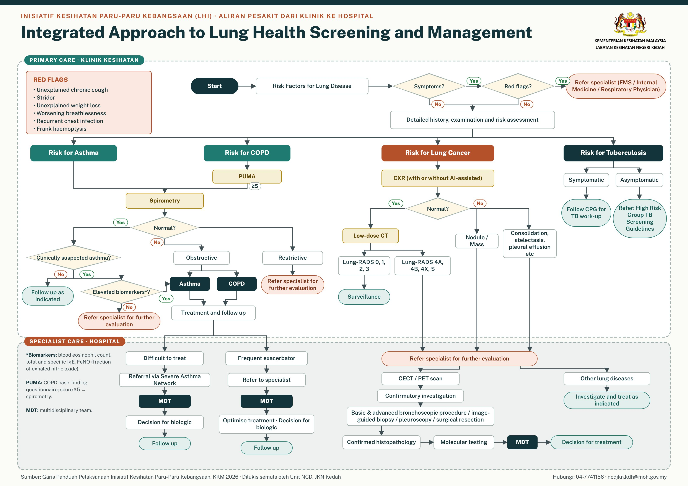

Hubungi & NaLuRy
Tentang LHI Agenda strategik KKM 2025–2030
Inisiatif Kesihatan Paru-paru Kebangsaan (LHI) memperkukuh pencegahan, saringan awal, diagnosis dan rawatan empat penyakit paru-paru utama: kanser paru-paru, COPD, asma dan Tibi.
Di Kedah, Klinik Kesihatan menjadi pintu masuk saringan melalui NHSI, Klinik Berhenti Merokok (KBM), Klinik NCD, URTI, OSCA dan program outreach. Klien yang dikesan abnormal dirujuk melalui laluan yang tersusun ke hospital rujukan untuk ujian diagnostik dan rawatan tanpa kelewatan.
Saringan ditawarkan kepada warganegara berumur ≥18 tahun yang berisiko (perokok, klien KBM, komorbid, hazard pekerjaan) atau bergejala (batuk ≥2 minggu, hemoptisis, sesak nafas).
- 90–95%kanser paru-paru didiagnos pada tahap 3–4
- 9.1%purata kadar insiden COPD, sangat kurang didiagnos
- 6.2%prevalens asma dewasa (2023)
- 75–80kes Tibi per 100,000 populasi
Pelaksanaan di Kedah
Saringan di KK berfasiliti X-ray. KK tanpa X-ray menyaring dan merujuk ke KK berdekatan.
Sasaran minimum saringan (5 seminggu) bagi setiap KK berfasiliti X-ray.
Perokok layak & bersetuju yang menjalani X-ray dada.
Diperluas ke semua KK, tertakluk kepada penilaian pelaksanaan dan kapasiti.
Aliran pesakit dari Klinik ke Hospital Algoritma bersepadu KKM

Panduan mengikut pasukan Tugas utama, NaLuRy dan carta alir
Carta alir & rujukan pantas Papar dahulu, kemudian muat turun
Tekan Papar untuk melihat carta sebelum memuat turun. Versi A4 untuk pencetak pejabat (cetak pada Actual size / 100%); versi A3 untuk cetakan poster.
Pemetaan fasiliti KK, hospital rujukan LDCT, Respiratori & Patologi
| Daerah | KK dengan X-ray | KK tanpa X-ray | Hospital LDCT | Respiratori & Patologi |
|---|
Pencapaian saringan Memuatkan data…
Saringan mengikut daerah
Bilangan saringan
KPI mengikut daerah
Garis putus = sasaran 80%
* Perokok termasuk bekas perokok (active, ex_smoker_lt15, ex_smoker_gt15).
Punca kuasa & dokumen rujukan Sekiranya bercanggah, GP KKM diguna pakai
Folder Sumber Rujukan LHI
Semua dokumen, borang dan bahan taklimat di satu folder